Japan's nine traditional regions, each with two iconic dishes. Click any food image to visit the official tourism site, or use the buttons below each card to find hotels and book food tours nearby.
ラーメン
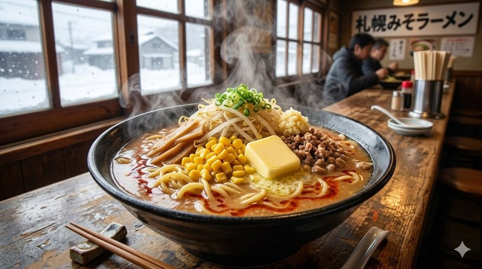
Born in the snowbound streets of Hokkaido in 1955, Sapporo's miso ramen warms the body like nothing else. Rich fermented miso broth — golden and almost stew-like — is loaded with stir-fried pork, garlic, ginger, butter, and sweet corn, then crowned with curly yellow noodles. The bowl was invented at Aji no Sanpei to combat brutal winters and quickly defined the city's culinary identity. Today the famous Ramen Yokocho alley packs a dozen tiny shops elbow-to-elbow, each guarding its own miso recipe.
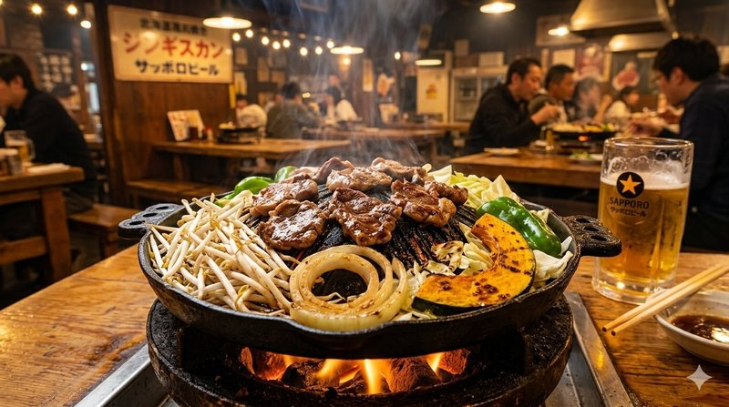
Hokkaido's signature lamb barbecue takes its name from the Mongol conqueror — though the dish is purely Japanese, dating to the 1930s when sheep farming was promoted on the northern island. Thin slices of lamb and mutton sizzle on a domed iron pan called a "Genghis Khan helmet," with vegetables ringing the base to soak up the juices. The meat is dipped in a soy-based sauce sweetened with apple, onion, and garlic. Beer gardens across Sapporo serve it in summer; specialty restaurants like Daruma and Matsuo are pilgrimage sites for visitors.
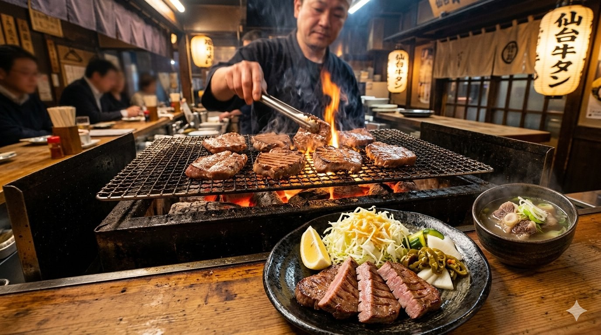
Born from post-war scarcity in 1948, Sendai's grilled beef tongue has become Japan's most refined nose-to-tail tradition. Chef Sano Keishirō reportedly invented the dish to use cuts of meat that occupying American forces left behind. Each thick slice of tongue is salt-cured for several days, then charcoal-grilled to a balance of crisp surface and tender, almost-buttery interior. The classic set arrives with barley rice (mugimeshi), oxtail soup, and pickles. Look for queues outside Rikyu, Date no Gyutan Honpo, and other family-run shops clustered around Sendai Station.
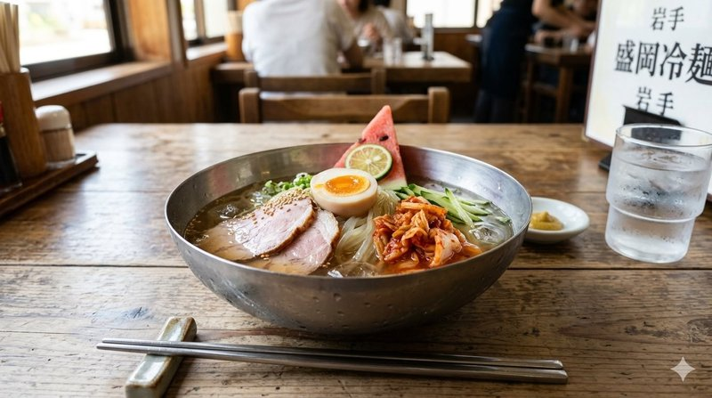
One of Morioka's celebrated "three great noodles," reimen was created in 1954 by Korean immigrant Yang Yong-cheol, who adapted the cold buckwheat noodles of his homeland to Japanese tastes. The chewy, translucent noodles — wheat flour and potato starch — sit in a clear, ice-cold beef-and-chicken broth, topped with kimchi, sliced beef, boiled egg, cucumber, and a wedge of pear or watermelon. The juicy fruit is the trademark touch. Eaten year-round but especially beloved in summer, the dish helped Morioka land on the New York Times' top travel destinations list in 2023.
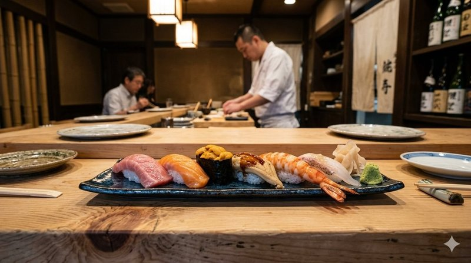
The original fast food of Tokyo. In the 1820s, a chef named Hanaya Yohei began serving small balls of vinegared rice topped with seafood pulled fresh from Edo Bay (present-day Tokyo Bay) — and modern sushi was born. "Edomae" literally means "in front of Edo." Traditional preparations included curing, marinating, and lightly cooking each topping before refrigeration existed, techniques that high-end sushi counters still employ today. Tsukiji's outer market remains the heart of the experience, and a meal at a top counter like Sukiyabashi Jiro is a culinary pilgrimage.
焼き
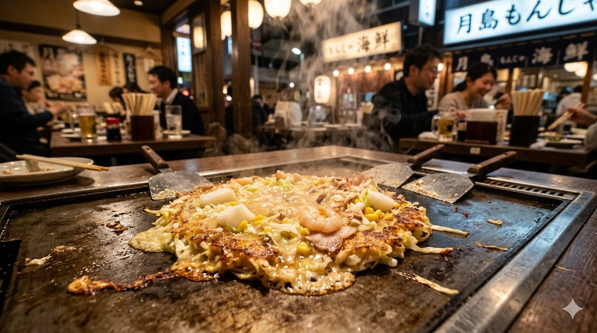
Tokyo's gooier, runnier cousin to Osaka's okonomiyaki. Monjayaki originated as a children's snack on metal griddles in Edo-period sweet shops, where the loose, soup-like batter was used to draw words ("monji-yaki" means "letter grilling"). It thickens into a savory, slightly crispy puddle of cabbage, dashi-flavored batter, and toppings — seafood, mochi, cheese, mentaiko, you name it. Diners scrape it off the iron grill with tiny metal spatulas called hagashi. Tsukishima's Monja Street, a single block packed with over 70 specialty restaurants, is the spiritual home of the dish.
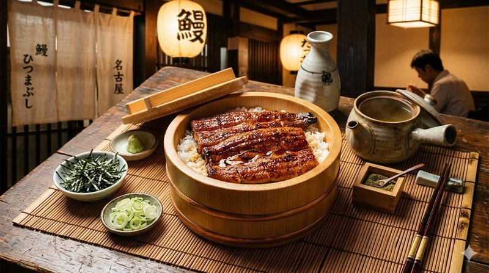
Nagoya's most refined dish elevates grilled freshwater eel into a three-act ritual. Charcoal-roasted, lacquered with a sweet soy glaze, then sliced over a wooden tub of rice, hitsumabushi is divided into four portions and eaten three different ways. First, plain — to taste the smoky eel itself. Second, with green onions, wasabi, and nori, sharper and brighter. Third, with hot dashi broth poured over to make ochazuke. The fourth portion, your favorite. Atsuta Horaiken, founded in 1873, is widely credited with codifying the technique. Reservations are essential.
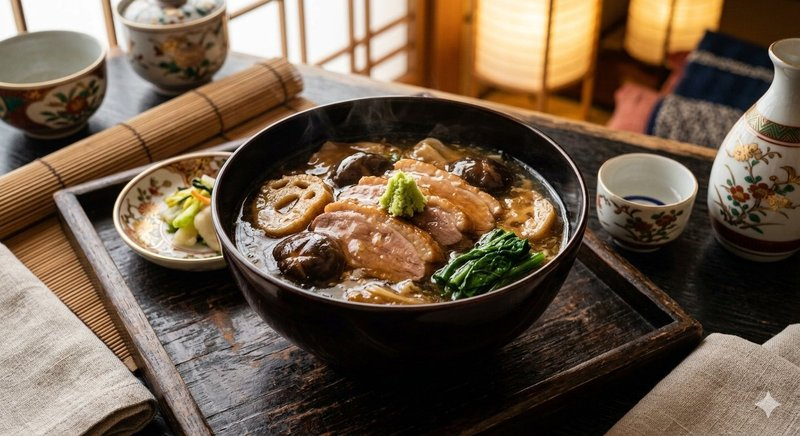
A samurai-era stew from the old Kaga Domain, jibuni is one of Kanazawa's three great traditional dishes. Slices of duck (originally wild fowl, now often domestic) and seasonal vegetables are dredged in flour and gently simmered in dashi seasoned with soy, mirin, and sake. The flour creates a silky, glossy sauce that coats every ingredient, and the dish is finished with a daub of fiery wasabi. The name supposedly derives from the simmering sound — "jibu jibu." Best eaten in winter at long-established kappo restaurants in the Higashi Chaya teahouse district.
焼き
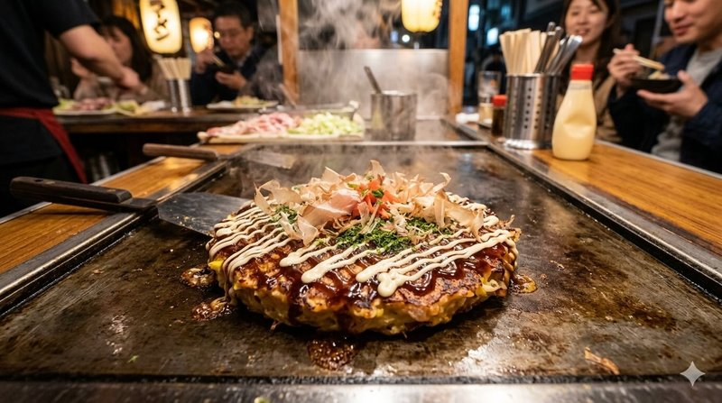
Osaka's defining dish — a savory pancake whose name literally means "grilled how you like it." Cabbage is tossed with a flour-and-dashi batter, mixed thoroughly with pork belly, seafood, or cheese, and fried on a hot teppan grill. Once flipped to a golden crust, it's brushed with a sweet-sour Worcestershire-based sauce, drizzled with kewpie mayo, and showered with bonito flakes that dance in the rising heat. Born from wartime food rationing in the 1930s, it became Osaka's calling card. Most restaurants seat you around the grill, where staff (or you) flip the pancake.
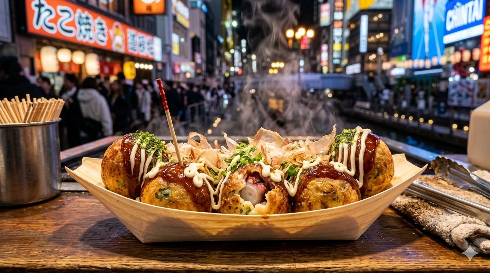
Invented in Osaka by street-food vendor Tomekichi Endo in 1935, takoyaki is the city's most exported snack — golden, almost spherical balls of dashi-flavored batter encasing a tender chunk of octopus, pickled ginger, and green onion. They're cooked in special cast-iron molds, rotated quarter-by-quarter with a metal pick until perfectly round and crispy outside, custardy inside. Doused in tonkatsu-style sauce, mayonnaise, aonori seaweed, and bonito flakes. Eat them piping-hot — the inside is molten. Dotonbori, especially around Wanaka and Aizuya, is the takoyaki epicenter.
焼き
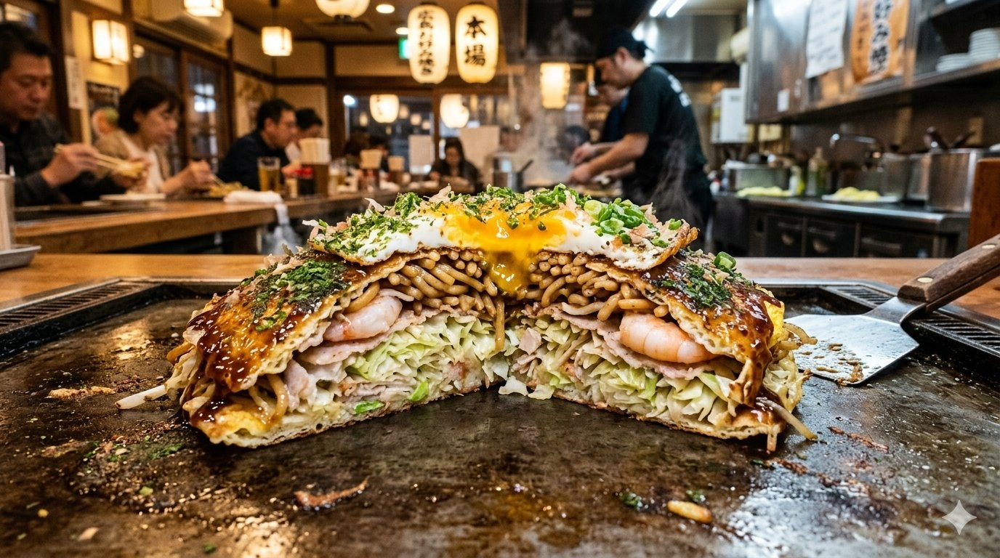
Distinctly different from Osaka's mixed-batter version, Hiroshima's okonomiyaki is layered like a savory crepe-cake. A thin pancake forms the base, piled high with shredded cabbage, bean sprouts, pork belly, and — uniquely — fried yakisoba or udon noodles. A fried egg seals the stack, which is flipped, glazed with sweet okonomi sauce, and topped with green onion. Over 800 specialty shops dot Hiroshima city; the legendary Okonomimura building houses 24 stalls on three floors. The dish was a wartime survival meal that has since become a fierce point of regional pride.
飯
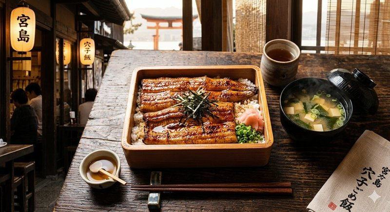
The iconic dish of sacred Miyajima Island, anagomeshi is a fragrant lacquered lunch box of grilled saltwater conger eel layered over rice cooked in eel-bone broth. Lighter and more delicate than its freshwater cousin unagi, the conger is brushed with a tare sauce and roasted over charcoal until crisp. Ueno is the original — founded in 1901 as an ekiben (station bento) vendor — and still operates beside Miyajimaguchi Pier, where ferry passengers queue for boxes to take onto the boat ride toward the floating torii gate of Itsukushima Shrine.
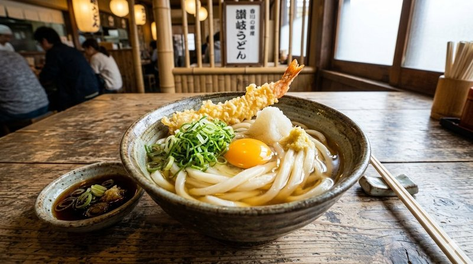
Kagawa Prefecture (the old Sanuki province) produces over half of Japan's udon and is so devoted to the noodle that it rebranded itself "Udon Prefecture." Famously thick, square-edged, and aggressively chewy ("koshi"), Sanuki udon is hand-kneaded — sometimes with the feet — from local wheat, salt, and water. The classic preparation is "kake": hot udon in a clear iriko (sardine) dashi. The self-service style at countless tiny shops lets you boil your own noodles, ladle dashi, add tempura, and pay by the bowl. Average price: under ¥500.
鰹のタタキ
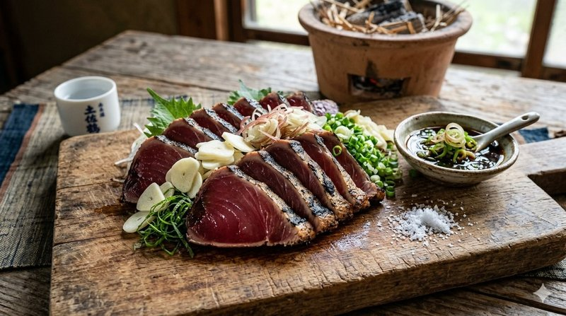
Kochi's signature dish is also one of Japan's most theatrical preparations. A whole side of bonito tuna is skewered and seared briefly over a roaring straw fire — the flames must be tall and hungry, the cook must work fast — to char the surface while leaving the interior glistening and raw. Sliced thick, the seared loin is plated over crushed garlic, ginger, scallion, and shiso, then dressed with a tart citrus ponzu. The smoky aroma is unforgettable. Hirome Market in central Kochi has stalls where you can watch the dramatic straw-flame searing live.
ラーメン
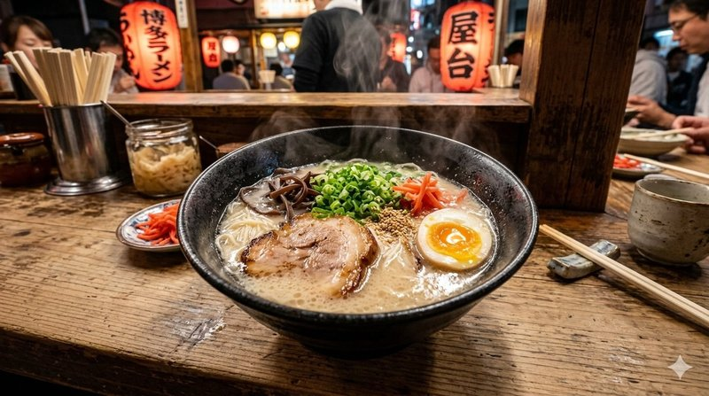
Cloudy, milky, intensely porky — Hakata-style tonkotsu ramen is the result of pork bones boiled hard for 12 to 24 hours until collagen turns the broth into something halfway between soup and cream. Ultra-thin, low-hydration noodles cook in seconds and are designed to be slurped fast before they soften. Diners can request "kaedama" — a second helping of noodles for the same broth — and customize firmness from "barikata" (very firm) to "yawamen" (soft). Yatai street stalls along the Naka River in Fukuoka serve the most atmospheric bowls.
ぽん
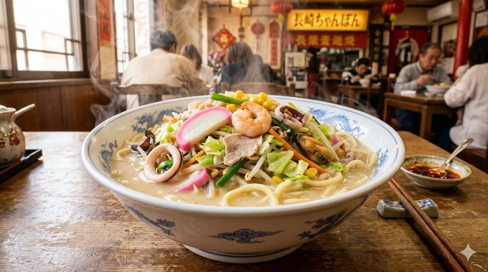
A noodle dish born from Nagasaki's role as Japan's only open port during the Edo era. Created around 1899 by Chinese restaurateur Chin Heijun at Shikairou — still operating today — to feed homesick and hungry Chinese students, champon is a hearty single-bowl meal where seafood, pork, cabbage, bean sprouts, and other vegetables are stir-fried in lard, then simmered with a rich pork-and-chicken broth and thick wheat noodles cooked directly in the soup. The word "champon" itself is thought to mean "mix it all together" in regional dialect.
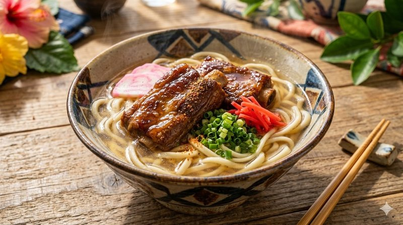
Despite its name, Okinawan soba contains no buckwheat — the noodles are wheat-based, with a bouncy, almost udon-like texture. The "soki" topping is pork spare ribs, slow-braised in soy sauce, brown sugar, and awamori (Okinawan rice spirit) until the meat falls off the bone. They sit atop noodles in a clear, light pork-and-bonito broth, garnished with shredded ginger, green onion, and a slice of pickled red ginger. Shimadofu (firm Okinawan tofu) and a sprinkle of koregusu — a fiery awamori-and-chili condiment — finish the bowl. Pure island comfort food.
チャンプルー
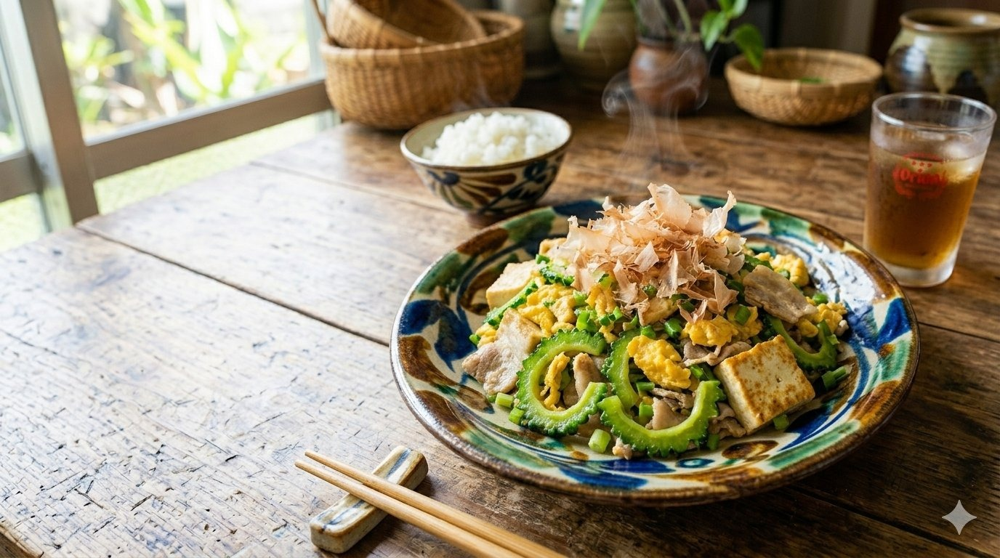
Okinawa's most iconic stir-fry, and a cornerstone of the famously long-lived Okinawan diet. "Champuru" means "something mixed" in the Okinawan language, and this version pairs goya — bitter melon, knobby and emerald-green — with diced spam or pork belly, scrambled egg, and firm shimadofu. The bitter melon is salted and rinsed to tame it, then flash-fried in lard. The result balances bitterness with the savor of pork and the silkiness of egg. Spam, an unlikely staple, arrived with American occupation in 1945. Eaten year-round, but most beloved through the brutally hot summer.
Recommended Resources
Some of the best information about regional Japanese cuisine remains in Japanese. Here are the sources I personally trust — with a note on how to read them in your own language.
Want to recreate these dishes at home? JA Kyosai — Japan's national agricultural cooperative federation — maintains a beautifully organized collection of authentic recipes for all 47 prefectures, complete with traditional ingredients and step-by-step methods straight from local home kitchens.
Visit JA Kyosai Recipes →These sites are in Japanese, but modern browsers translate them seamlessly in seconds. On Chrome or Edge, right-click anywhere on the page and select "Translate to English." On iPhone or Mac Safari, tap the "aA" icon in the address bar and choose Translate. Most of the deepest travel knowledge written inside Japan stays in Japanese — knowing how to unlock it opens an entirely different layer of insight, the kind tourists rarely access.